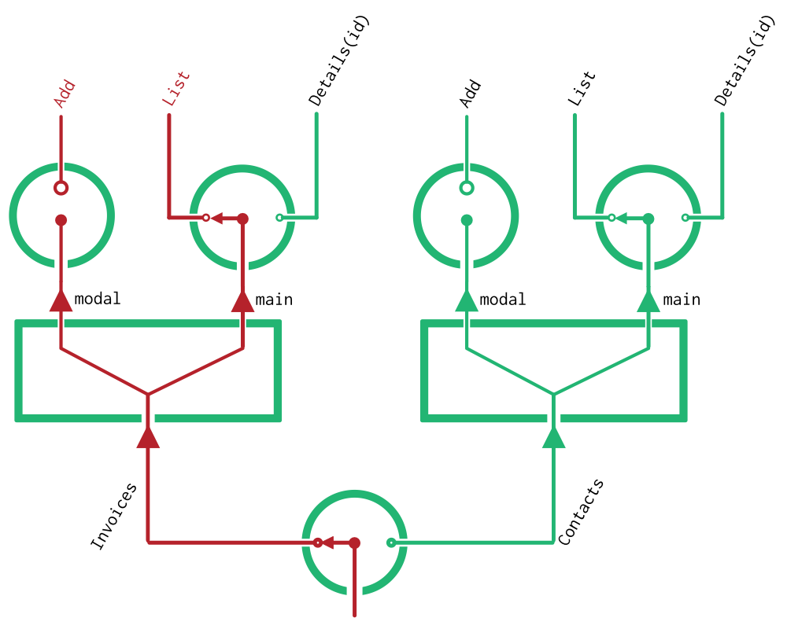

Junctions
So far, you've learned about the two types of objects which hold the location state of your application:
Locationobjects, which share the same structure as your browser's History APIRouteSetobjects, which share the same structure as your component tree
Junctions are the third and final type of object which this package uses. But in contrast to the first two objects, Junctions don't actually hold any state. Instead, each Junction specifies how to map between one slice of a Location, and a corresponding Route tree.
Junction objects are just like the junctions in a railway system, or switches in a circuit diagram.
They're points at which a route can take one of many branches. Each junction can feed into the next junction to create a tree. And the Route you take through them all will depend on your final Location.
Let's go back and take a second look at the example Route from the Routes page:
{
// PaymentList is a `Branch` object!
branch: PaymentList,
data: { ... },
params: { ... },
children: { ... },
}
You might now guess that the branch property of each Route corresponds to one of these route types which a Junction object defines. And you'd be right! Within this package, these route types are called branches. Each of these Branch objects store the information about one type of route -- including its URL pattern, any available parameters, and that arbitary data object which you also see above.
You may also guess that since the available branches for a Route object can be defined by a Junction, it might also make sense to have a JunctionSet which maps to a RouteSet. And you'd be right again! Visually,
And finally, you may guess that just as a Route object stores its children with a RouteSet, we'd expect that a single branch of a Junction will define its possible child routes with a JunctionSet.
But honestly, explanations of tree structures like this just don't map very well to paragraphs. It is all a lot easier to grok if you just draw it. So that's what we'll do.
Junction Diagrams
A junction diagram is kind of like a schematic for your application. It represents all of the possible routes your application can take, using the following conventions:
- Junctions are represented as rotary switches, with the default branch drawn as the currently selected arm of the switch.
- Junction Sets are represented as splitters
- Routes (and route sets) can be drawn onto the diagram by lighting up one path through a series of junctions
Here's an example. In fact, its pretty close to what you saw in the Routes page -- the main difference is that it now shows default branches.

Junction diagrams are a great tool to reason about an application's structure. In fact, if we were to also write out the options for each Branch, these diagrams would contain enough information to perform a mapping between Locations and RouteSets. But as great as diagrams may be for humans, they're not very useful for machines. So let's learn how to declare Junctions with functions.